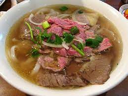

Description
A delicious chicken pho that can be made at home for anyone craving the taste of homemade vietnamese food!
Ingredients
- 3 Pounds chicken bones
- 1 Whole chicken
- 1 Mediium onion
- 1 Piece ginger
- 1 Container chicken broth
- 1/4 Cup rock sugar
- 3 Tsp fish sauce
- 2 Cubes pho ga soup seasoning
- 1 Tsp salt
- 16oz Rice noodles
- Bean sprouts, Green onions, Cilatro, Basil, Lime
Steps
- Bring water to a boil in a stockpot. Meanwhile, rinse chicken bones under hot water to get rid of impurities.
- Place bones in the pot of boiling water. Reduce heat and simmer until starting to soften, skimming any fat off the surface of the broth, about 60 minutes. Discard parboiled bones.
- Place whole chicken into the pot and simmer until no longer pink in the center, 30 to 40 minutes. Remove chicken from broth and set aside to cool. An instant-read thermometer inserted near the bone should read 165 degrees F (74 degrees C).
- Combine onion and ginger in a skillet over medium-high heat. Cook and stir until nicely browned and fragrant, about 7 minutes. Smash ginger with the backside of a knife onto a cutting board. Place onion and ginger into the broth. Add chicken broth, rock sugar, fish sauce, pho ga seasoning, and salt.
- Bring a large pot of water to a boil. Add rice noodles and boil until tender yet firm to the bite, 2 to 3 minutes. Drain.
- Peel skin off of the cooled chicken; discard skin and bones, reserving the meat.
- Serve noodles in bowls topped with chicken meat and broth. Garnish with bean sprouts, green onion, cilantro, and Thai basil. Squeeze a wedge of lime into each bowl.
- Enjoy!